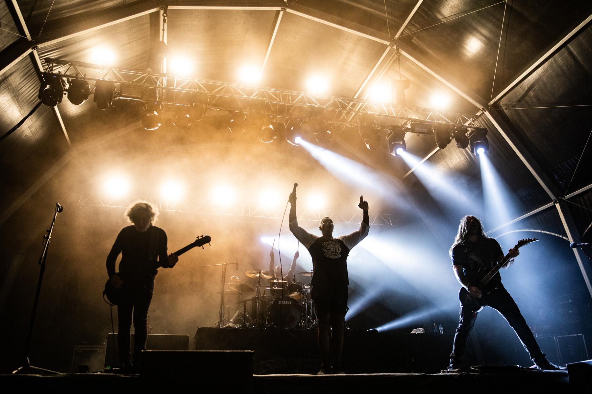

Metal Charts е млада и независима организация, основана през 2023 година от група студенти и фенове на тежката музика във Варна. Целта е да покаже, че метълът не е умрял и продължава да се развива. Организацията публикува ревюта на нови албуми, интервюта с банди и класации, за да покаже, че жанрът е жив и активен. В същото време отдава почит на класически банди като Iron Maiden, Judas Priest и Megadeth, които са оформили метъл музиката.

През първите месеци след старта, Metal Charts започва да представя нови банди от България и Европа, като им предоставя платформа за изява и ревюта. Основната мисия е да се докаже, че метълът има бъдеще, като се показват качествени нови издания. Организацията следи както класическите имена, така и модерни банди като Gojira, които внасят свежа енергия и нови идеи в жанра.
Metal Charts се стреми да прави сцената по-достъпна за феновете чрез ревюта, интервюта и класации. Всеки нов албум се оценява честно, като се подчертават както иновациите, така и връзката с класическите традиции. Вдъхновение идва от легендарни студия и записи, които са създали някои от най-великите метъл албуми, а също така се обръща внимание на съвременни студия, които поддържат жив жанра.

Партньорите на Metal Charts включват клубове и студия, които подкрепят новата сцена и същевременно уважават историята на жанра. Всеки член на екипа е истински фен на метъл музиката – било като слушател, фотограф или музикант. Организацията следи както класиката от Iron Maiden и Megadeth, така и нови банди като Gojira, които доказват, че метълът продължава да се развива и да вдъхновява.
Metal Charts вярва, че метълът е жив жанр и с всеки нов албум доказва това. Организацията цели да запази интереса на феновете и да вдъхнови нови слушатели, като отдава почит на великите банди от миналото и подкрепя нови изпълнители. От Iron Maiden и Megadeth до съвременни имена като Gojira, всеки албум е част от бъдещето на метъла.